Using Analysis Sets to Manage Phased
We strongly recommend using analysis sets to manage phased , rather than using the old phase functionality.
The analysis set approach is to set up separate in that correspond to each of the "phases", and use a analysis set to relate these together (for example, as a single site).
Setting Up Analysis Sets for Phased :
- In JC Configuration, create a analysis set to represent "Site". If there is a relationship between the codes for on the same site, you can set up to populate the analysis set automatically based on the code. In the example below, the site number is linked to the first four characters of the number.
Screenshot: Set up of analysis sets
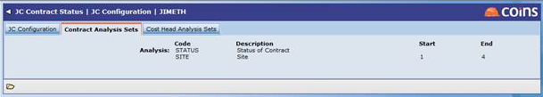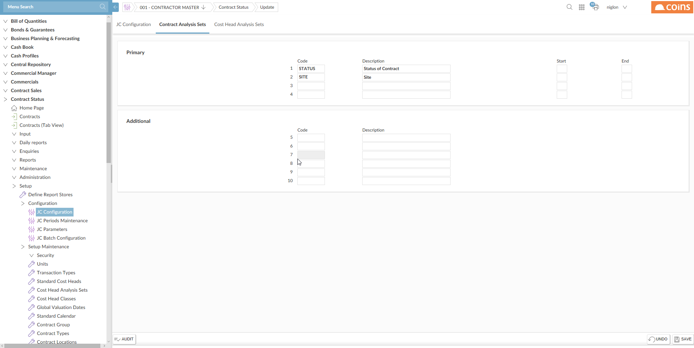
- In Analysis Sets, use the selector to show the sites list, and set up the codes for sites.
Screenshot: Set up of sites
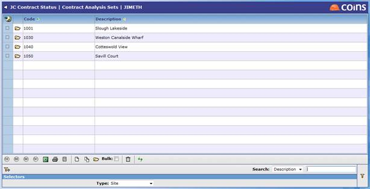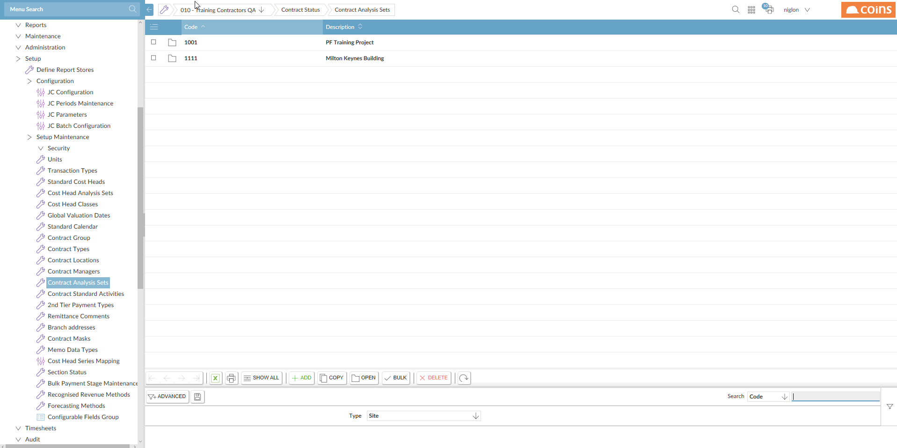
- Set up for each phase. The following screen shows a list of phased with one site split into three phases and another split into two. In this example no "whole site" phase has been set up on either, but it could have been set up as 10010 and 10300 if required.
- Set up for each phase. The following screen shows a list of phased with one site split into two phases
Screenshot: List of
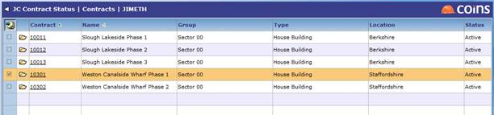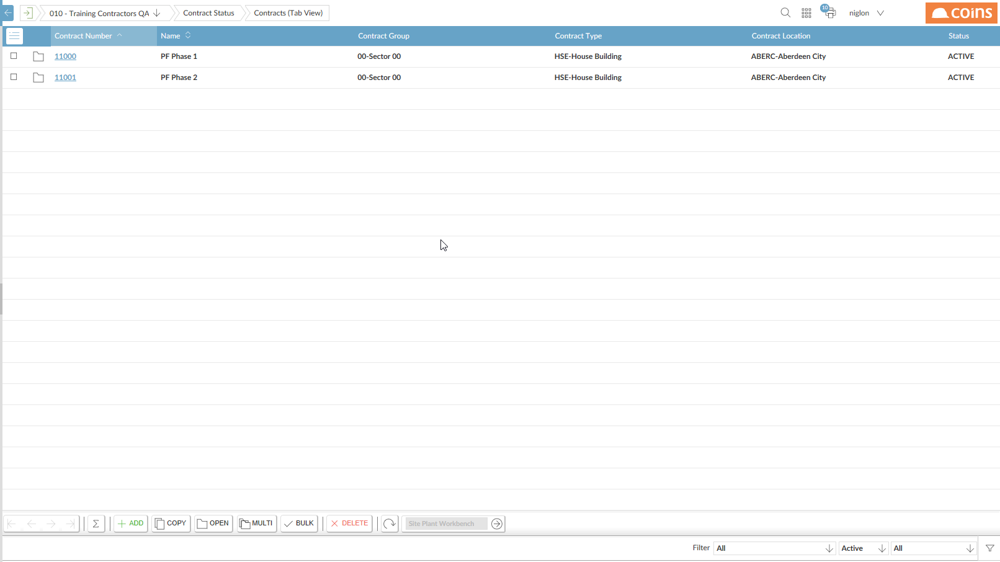
- The following screen then shows how a is linked to the site using the analysis set.
Site analysis set on a
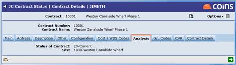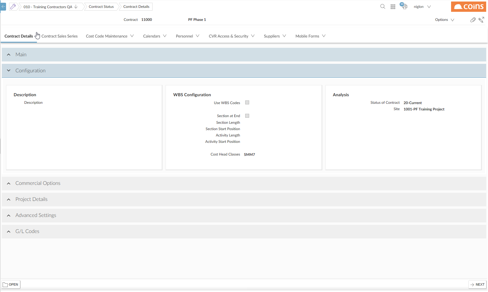
If you have set up the "Site" analysis set so that is can be derived from the code, the Site field will have been filled in automatically; if not, you will need to select the site manually.
- The Site analysis set will then be available on and reports. For example, the following screen shows how the site analysis set is automatically added to the standard selection tab:
Screenshot: Site field on selection
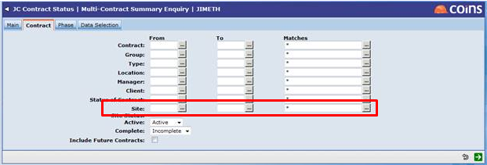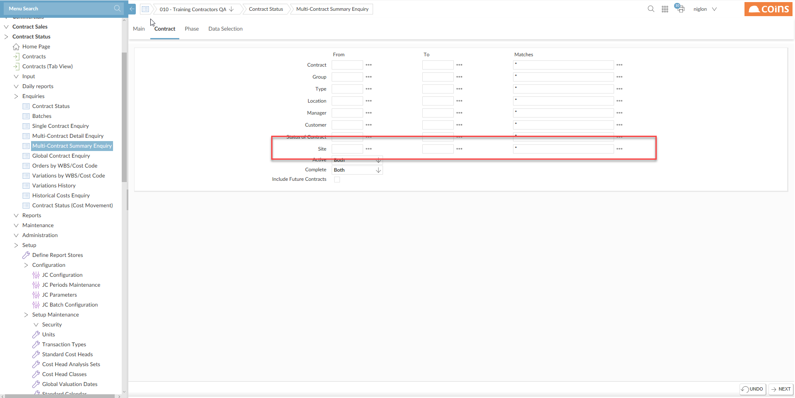
And the following screen shows the Multi- Summary demonstrating the Site tab (which is automatically available when the analysis set has been configured).
Screenshot: Site tab on
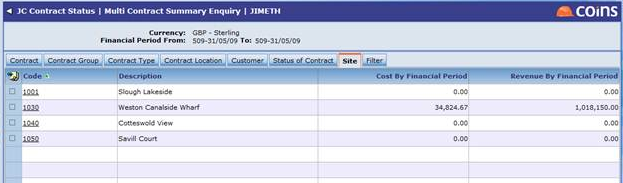